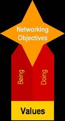

Values-Based Networking
A proven method for creating meaningful interactions and an abundance of business opportunities.
For many of us, the terms “networking” “business development” and “selling” conjure up significant baggage, perceptions of inauthentic salespeople, self-doubting voices and concerns about meeting new people and asking for help. The above terms may also feel contrary to the essence of coaching. However, deep inside, we also know that without claiming clients, networking, marketing and business development, coaching would not be changing the world as it is today.
As a Co-Active Coach, you know the power of values. The connection between values, choice and action is tightly linked. Once identified, you know when they are being stepped on and when they are being honored. When you and your clients are connected and honoring values, interactions with others become increasingly authentic and meaningful. Speaking of clients, did you know that looking at values can provide a source for even more…?!
 We as coaches can approach networking in a more harmonious way. I invite you into an exploration of another perspective, values-based networking.
The concept is simple: leverage the ideas in your value set to bring about ways of being and actions that enable you to overcome your doubts and be in complete fulfillment as you seek out potential clients and co-creators.
The four steps of values-based networking will create a roadmap for your approaching others and creating abundance. If the concept of networking or business development has you stuck, this framework may serve to create movement. Conversely, if you’re already swimming in abundance, perhaps this will add a new source of creativity.
The Four Steps
Before moving into the steps below, it is helpful to identify the purpose or objectives behind your motivation to network. What is it you look to create?
The following questions may be helpful with either the brainstorming or choosing steps:
Being - Specific to this area of your life, how do you want others to experience you? What will you personally do to stay in touch with this perspective? What will you do when your gremlin shows up?
Doing - How will you build relationships? In which venues or communities? What events will you attend and why? How will you participate when you get there? How often and in what form will you connect with others? What will you create (e.g., programs, marketing materials) to support what you offer to the world? What will it look like and why?
A Compelling Case
The origination of the concept of values-based networking comes from my experience with results from the advising and coaching organization that I belong to, which holds strongly to ‘Our Fingerprints.’ Let me explain what ‘Our Fingerprints’ are: our company values, “the way we be”, the intentional and only marks we want to leave behind. We have found consulting to be much like coaching in that the designed alliance is fundamental to success. Thus, our networking approach can be held as analogous because it is grounded in a relationship (versus product).
Similar to coaches, the one and only way our firm can sustain our mission is to generate enough business every month to cover our expenses and invest in what is needed to be of service. Many are astounded when we share that our business has grown successfully over the past twelve years without utilizing traditional sales techniques or responding to RFPs. All of our work to date has been generated through networking and referrals. Our clients often acknowledge that “how we be” is what makes us different.
As a learning case for values-based networking, let’s explore how one of our ‘Fingerprints’ is translated directly into activities that create meaningful connections and business opportunities. Keep in mind, this value is one of six that form our approach: Authentic Connection, Co-Creativity, Generosity, Courage, Integrity and Humility.
| IDENTIFY |
EXPAND |
BRAINSTORM |
CHOOSE |
|||
Fingerprint (Value) |
Meaning |
Networking Glasses |
|
|
||
| Generosity |
|
|
|
|
||
Because these activities and ideas are rooted firmly in our personal and organizational values, “business development” and “networking” feel fun, genuine and meaningful. In addition, the impact on our clients is positive whereby they experience and feel the same values in every interaction they have with us.
As a coach, you are your brand. When your brand – your authentic self -- is aligned and intimately connected with your networking, you will attract those that value your gifts and therefore seek to partner with you or be your clients. Values-based networking works. It is a pathway towards abundance-- creating both personal plenty and generating connections that serve our global community.
Laura McGann , MBA is an Advisor and Leadership Coach with The Clarion Group, a boutique advisory firm that works with leaders to support organizational transformation in the areas of strategy, management infrastructure and organizational behavior. Laura is a graduate of the Co-Active Leadership Program and is preparing for her Coach Certification exam in February. You can contact her at mcgann@theclariongroup.com . More information on The Clarion Group and their Fingerprints can be found at www.theclariongroup.com .